Qianru Sun
孙倩茹
Assistant Professor
Lee Kong Chian Fellow
School of Computing and Information SystemsSingapore Management University
Contact Info:
qianrusun AT smu DOT edu DOT sg80 Stamford Rd, Singapore, 178902
Bio
I am an assistant professor of computer science in the School of Computing and Information Systems (SCIS), Singapore Management University (SMU). Here is my faculty profile. From 2018 to 2019, I was a research fellow working with Prof. Tat-Seng Chua at the National University of Singapore and Prof.Dr. Bernt Schiele at the MPI for Informatics. From 2016 to 2018, I held the Lise Meitner Award Fellowship and worked with Prof.Dr. Bernt Schiele and Prof. Dr. Mario Fritz at the MPI for Informatics. I got my Ph.D. degree from Peking University in 2016 and my thesis was advised by Prof. Hong Liu. In 2014, I visited in the research group of Prof. Tatsuya Harada at the University of Tokyo. My research interests are computer vision and machine learning.
News
Ph.D. Students
Since Jun 2018
(with Prof. Bernt Schiele)
MPI for Informatics yaoyao.liu[at]mpi-inf.mpg.de
Master Students
Jan 2022-Jun 2022
SMU
Research Fellows/Assistants
Jan 2020-Dec 2020
Research Assistant
Beijing Jiaotong University
Nov 2019-May 2021
Research Assistant
Hefei University of Technology
Aug 2020-Dec 2020
Research Student
SMU
Aug 2020-Mar 2021
Research Assistant
SMU
Jun 2021-May 2022
Visiting
Jilin University
Aug 2021-Dec 2021
Research Student
SMU
Nov 2021-Oct 2022
Research Assistant
Nanjing University of Science and Technology

Nov 2021-Oct 2022
Visiting
(with Prof. Ee-Peng Lim)
Hunan University
Jan 2022-May 2022
Research Assistant
SMU
Selected Publications
2022
| 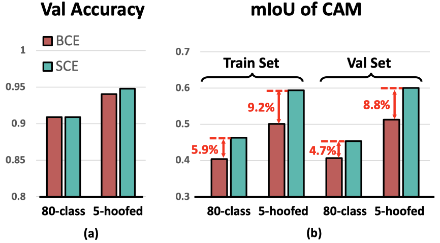 |
Class Re-Activation Maps for Weakly-Supervised Semantic Segmentation Zhaozheng Chen, Tan Wang, Xiongwei Wu, Xian-Sheng Hua, Hanwang Zhang, Qianru Sun 2022 IEEE/CVF Conference on Computer Vision and Pattern Recognition, CVPR '22. [paper] [code]
Extracting class activation maps (CAM) is arguably the most standard step of generating pseudo masks for weakly supervised semantic segmentation (WSSS). Yet, we find that the crux of the unsatisfactory pseudo masks is the binary cross-entropy loss (BCE) widely used in CAM. Specifically, due to the sum-over-class pooling nature of BCE, each pixel in CAM may be responsive to multiple classes co-occurring in the same receptive field. To this end, we introduce an embarrassingly simple yet surprisingly effective method: Reactivating the converged CAM with BCE by using softmax crossentropy loss (SCE), dubbed ReCAM. Given an image, we use CAM to extract the feature pixels of each single class, and use them with the class label to learn another fully-connected layer (after the backbone) with SCE. Once converged, we extract ReCAM in the same way as in CAM. |
| 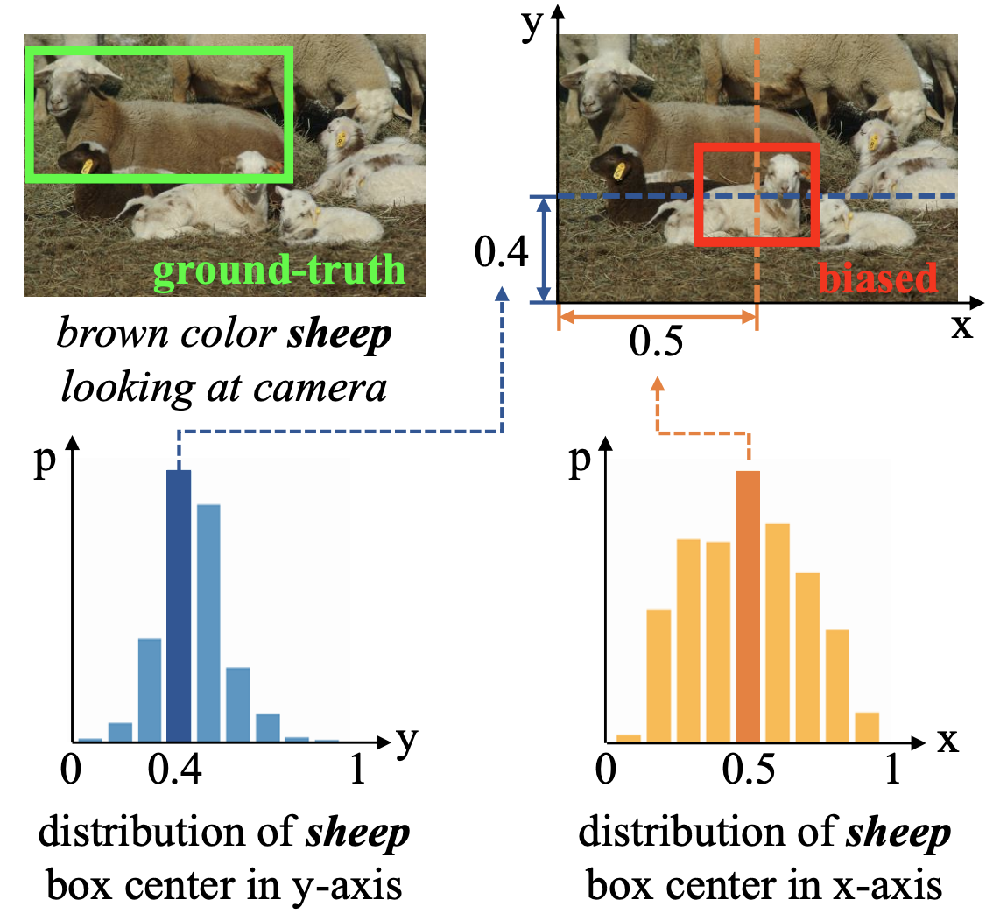 |
Deconfounded Visual Grounding Jianqiang Huang, Yu Qin, Jiaxin Qi, Qianru Sun, Hanwang Zhang The 36th AAAI Conference on Artificial Intelligence, AAAI '22. (15%) [paper] [code] We focus on the confounding bias between language and location in the visual grounding pipeline, where we find that the bias is the major visual reasoning bottleneck. For example, the grounding process is usually a trivial languagelocation association without visual reasoning, e.g., grounding any language query containing sheep to the nearly central regions, due to that most queries about sheep have groundtruth locations at the image center. First, we frame the visual grounding pipeline into a causal graph, which shows the causalities among image, query, target location and underlying confounder. Through the causal graph, we know how to break the grounding bottleneck: deconfounded visual grounding. Second, to tackle the challenge that the confounder is unobserved in general, we propose a confounder-agnostic approach called: Referring Expression Deconfounder (RED), to remove the confounding bias. Third, we implement RED as a simple language attention, which can be applied in any grounding method. |
2021
| 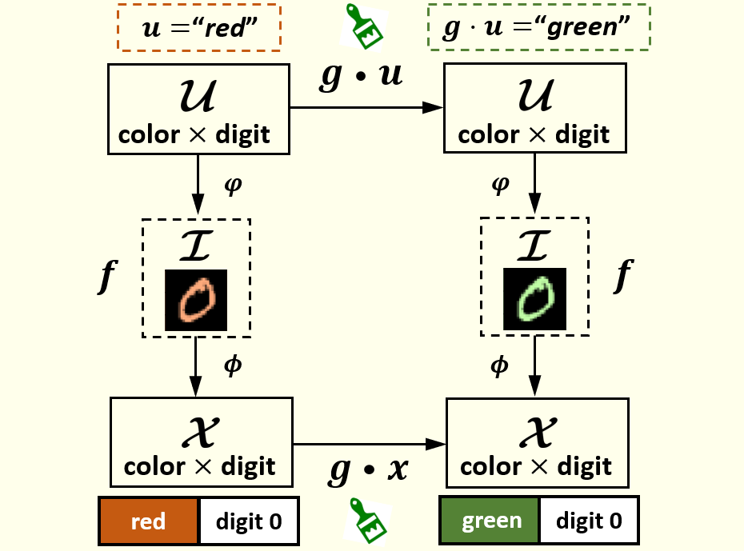 |
Self-Supervised Learning Disentangled Group Representation as Feature Tan Wang, Zhongqi Yue, Jianqiang Huang, Qianru Sun, Hanwang Zhang 2021 Conference on Neural Information Processing Systems, NeurIPS '21. (Spotlight Presentation, 3%) [paper] [code] A good visual representation is an inference map from observations (images) to features (vectors) that faithfully reflects the hidden modularized generative factors (semantics). In this paper, we formulate the notion of "good" representation from a group-theoretic view using Higgins' definition of disentangled representation, and show that existing Self-Supervised Learning (SSL) only disentangles simple augmentation features such as rotation and colorization, thus unable to modularize the remaining semantics. To break the limitation, we propose an iterative SSL algorithm: Iterative Partition-based Invariant Risk Minimization (IP-IRM), which successfully grounds the abstract semantics and the group acting on them into concrete contrastive learning. At each iteration, IP-IRM first partitions the training samples into two subsets that correspond to an entangled group element. Then, it minimizes a subset-invariant contrastive loss, where the invariance guarantees to disentangle the group element. We prove that IP-IRM converges to a fully disentangled representation and show its effectiveness on various benchmarks. |
| 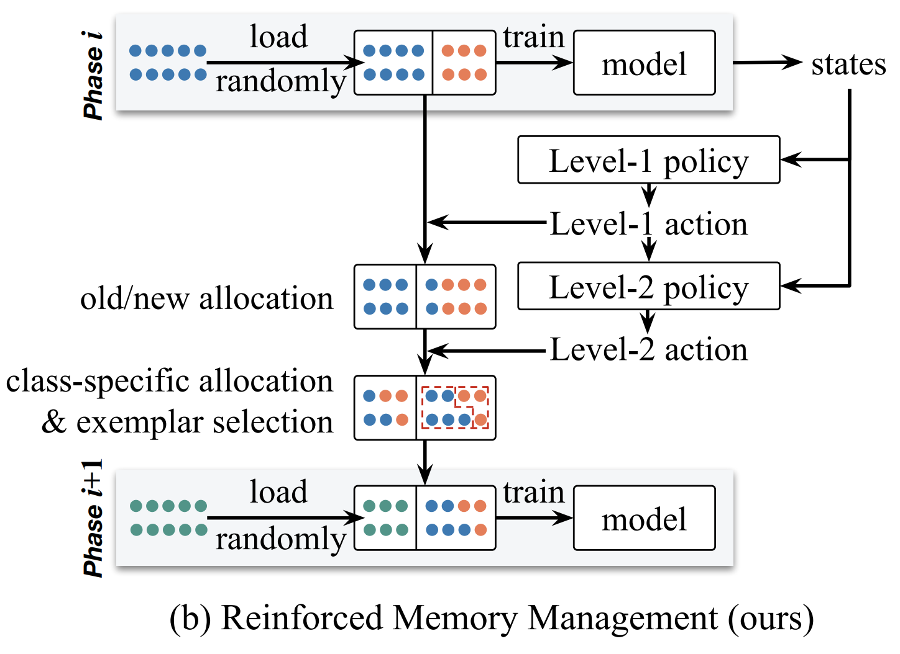 |
RMM: Reinforced Memory Management for Class-Incremental Learning Yaoyao Liu, Bernt Schiele, Qianru Sun 2021 Conference on Neural Information Processing Systems, NeurIPS '21. [paper] [code] Class-Incremental Learning (CIL) [40] trains classifiers under a strict memory budget: in each incremental phase, learning is done for new data, most of which is abandoned to free space for the next phase. The preserved data are exemplars used for replaying. However, existing methods use a static and ad hoc strategy for memory allocation, which is often sub-optimal. In this work, we propose a dynamic memory management strategy that is optimized for the incremental phases and different object classes. We call our method reinforced memory management (RMM), leveraging reinforcement learning. RMM training is not naturally compatible with CIL as the past, and future data are strictly non-accessible during the incremental phases. We solve this by training the policy function of RMM on pseudo CIL tasks, e.g., the tasks built on the data of the 0-th phase, and then applying it to target tasks. RMM propagates two levels of actions: Level-1 determines how to split the memory between old and new classes, and Level-2 allocates memory for each specific class. In essence, it is an optimizable and general method for memory management that can be used in any replaying-based CIL method. |
| 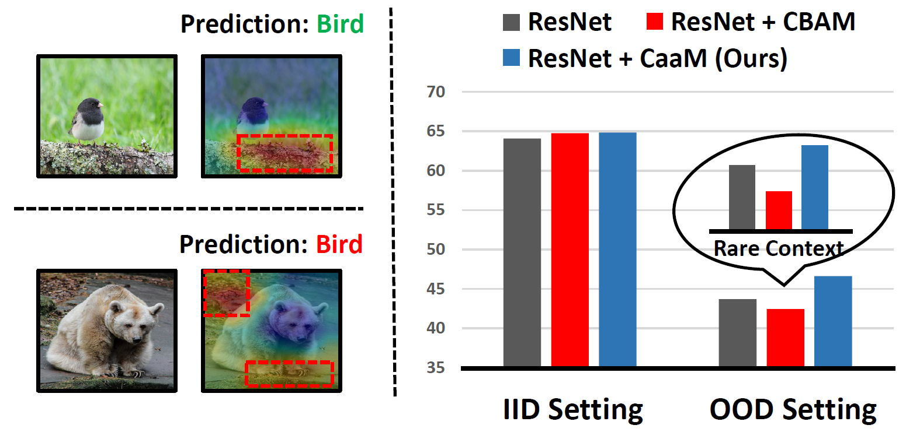 |
Causal Attention for Unbiased Visual Recognition Tan Wang, Chang Zhou, Qianru Sun, Hanwang Zhang International Conference on Computer Vision, ICCV '21. [paper] [code] Attention module does not always help deep models learn causal features that are robust in any confounding context, e.g., a foreground object feature is invariant to different backgrounds. This is because the confounders trick the attention to capture spurious correlations that benefit the prediction when the training and testing data are IID; while harm the prediction when the data are OOD. The sole fundamental solution to learn causal attention is by causal intervention, which requires additional annotations of the confounders, e.g., a "dog" model is learned within "grass+dog" and "road+dog" respectively, so the "grass" and "road" contexts will no longer confound the "dog" recognition. However, such annotation is not only prohibitively expensive, but also inherently problematic, as the confounders are elusive in nature. In this paper, we propose a causal attention module (CaaM) that self-annotates the confounders in unsupervised fashion. In particular, multiple CaaMs can be stacked and integrated in conventional attention CNN and self-attention Vision Transformer. In OOD settings, deep models with CaaM outperform those without it significantly; even in IID settings, the attention localization is also improved by CaaM, showing a great potential in applications that require robust visual saliency. |
| 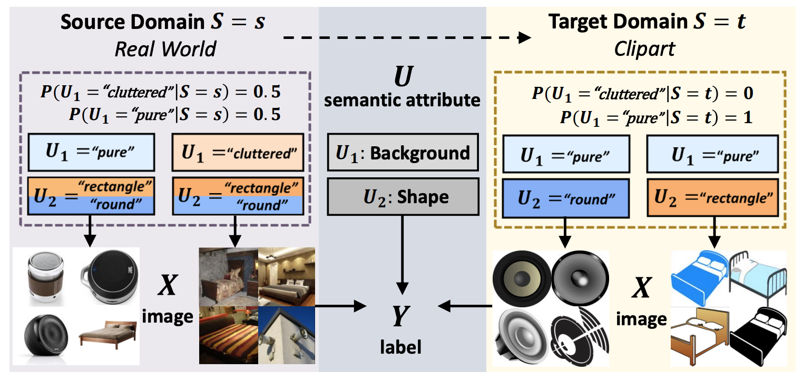 |
Transporting Causal Mechanisms for Unsupervised Domain Adaptation Zhongqi Yue, Qianru Sun, Xian-Sheng Hua, Hanwang Zhang International Conference on Computer Vision, ICCV '21. (Oral Presentation, 3%) [paper] [code] Existing Unsupervised Domain Adaptation (UDA) literature adopts the covariate shift and conditional shift assumptions, which essentially encourage models to learn common features across domains. However, due to the lack of supervision in the target domain, they suffer from the semantic loss: the feature will inevitably lose nondiscriminative semantics in source domain, which is however discriminative in target domain. We use a causal view—transportability theory —to identify that such loss is in fact a confounding effect, which can only be removed by causal intervention. However, the theoretical solution provided by transportability is far from practical for UDA, because it requires the stratification and representation of the unobserved confounder that is the cause of the domain gap. To this end, we propose a practical solution: Transporting Causal Mechanisms (TCM), to identify the confounder stratum and representations by using the domain-invariant disentangled causal mechanisms, which are discovered in an unsupervised fashion. |
| 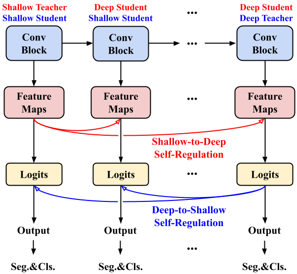 |
Self-Regulation for Semantic Segmentation Dong Zhang, Hanwang Zhang, Jinhui Tang, Xian-Sheng Hua, Qianru Sun International Conference on Computer Vision, ICCV '21. [paper] [code] In this paper, we seek reasons for the two major failure cases in Semantic Segmentation (SS): 1) missing small objects or minor object parts, and 2) mislabeling minor parts of large objects as wrong classes. We have an interesting finding that Failure-1 is due to the underuse of detailed features and Failure-2 is due to the underuse of visual contexts. To help the model learn a better trade-off, we introduce several Self-Regulation (SR) losses for training SS neural networks. By “self”, we mean that the losses are from the model per se without using any additional data or supervision. By applying the SR losses, the deep layer features are regulated by the shallow ones to preserve more details; meanwhile, shallow layer classification logits are regulated by the deep ones to capture more semantics. We conduct extensive experiments on both weakly and fully supervised SS tasks, and the results show that our approach consistently surpasses the baselines. |
| 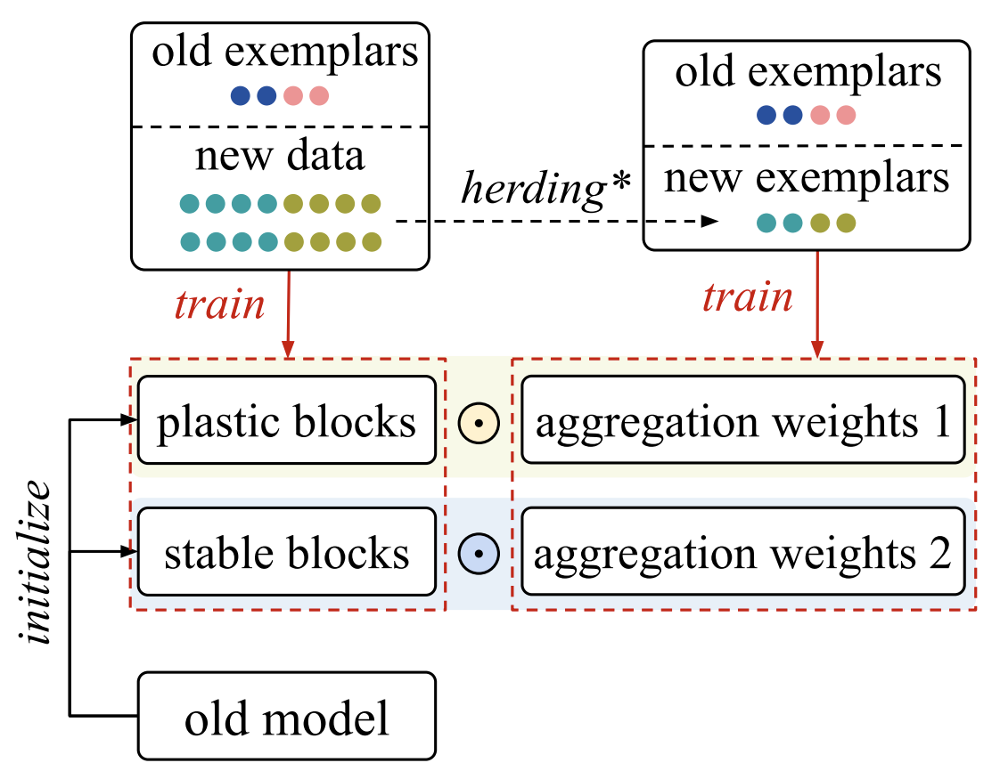 |
Adaptive Aggregation Networks for Class-Incremental Learning Yaoyao Liu, Bernt Schiele, Qianru Sun 2021 IEEE/CVF Conference on Computer Vision and Pattern Recognition, CVPR '21. [paper] [supp] [code] Class-Incremental Learning (CIL) aims to learn a classification model with the number of classes increasing phase-by-phase. An inherent problem in CIL is the stability-plasticity dilemma between the learning of old and new classes, i.e., high-plasticity models easily forget old classes, but high-stability models are weak to learn new classes. We alleviate this issue by proposing a novel network architecture called Adaptive Aggregation Networks (AANets) in which we explicitly build two types of residual blocks at each residual level (taking ResNet as the baseline architecture): a stable block and a plastic block. We aggregate the output feature maps from these two blocks and then feed the results to the next-level blocks. We adapt the aggregation weights in order to balance these two types of blocks, i.e., to balance stability and plasticity, dynamically. |
| 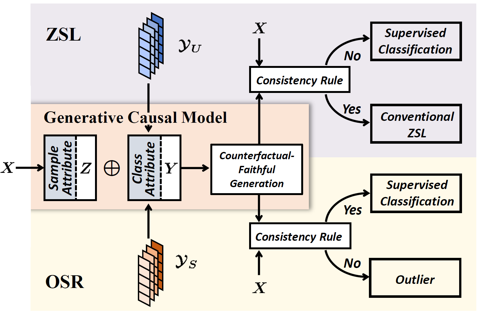 |
Counterfactual Zero-Shot and Open-Set Visual Recognition Zhongqi Yue, Tan Wang, Qianru Sun, Xian-Sheng Hua, Hanwang Zhang 2021 IEEE/CVF Conference on Computer Vision and Pattern Recognition, CVPR '21. [paper] [supp] [code] We present a novel counterfactual framework for both Zero-Shot Learning and Open-Set Recognition, whose common challenge is generalizing to the unseen-classes by only training on the seen-classes. Our idea stems from the observation that the generated samples for unseen-classes are often out of the true distribution, which causes severe recognition rate imbalance between the seen-class (high) and unseen-class (low). We show that the key reason is that the generation is not Counterfactual Faithful, and thus we propose a faithful one, whose generation is from the sample-specific counterfactual question: What would the sample look like, if we set its class attribute to a certain class, while keeping its sample attribute unchanged? Thanks to the faithfulness, we can apply the Consistency Rule to perform unseen/seen binary classification, by asking: Would its counterfactual still look like itself? If "yes", the sample is from a certain class, and "no" otherwise. |
2020
| 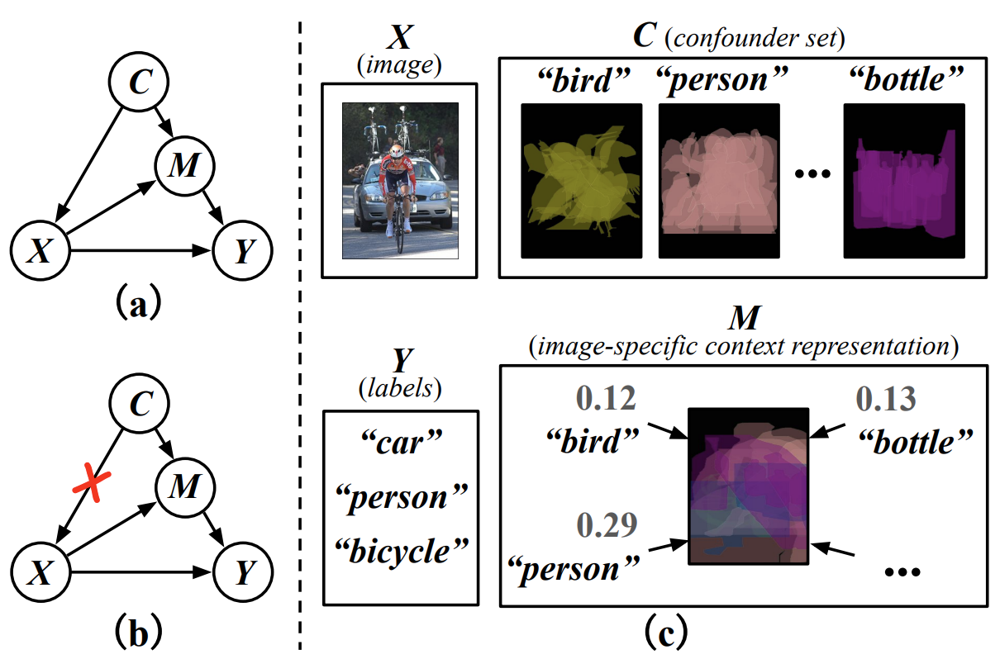 |
Causal Intervention for Weakly-Supervised Semantic Segmentation Dong Zhang, Hanwang Zhang, Jinhui Tang, Xian-Sheng Hua, Qianru Sun Neural Information Processing Systems, NeurIPS '20. (Oral Presentation, 1.1%) [paper] [code] We present a causal inference framework to improve Weakly-Supervised Semantic Segmentation (WSSS). Specifically, we aim to generate better pixel-level pseudo-masks by using only image-level labels -- the most crucial step in WSSS. We attribute the cause of the ambiguous boundaries of pseudo-masks to the confounding context, e.g., the correct image-level classification of "horse" and "person" may be not only due to the recognition of each instance, but also their co-occurrence context, making the model inspection (e.g., CAM) hard to distinguish between the boundaries. Inspired by this, we propose a structural causal model to analyze the causalities among images, contexts, and class labels. Based on it, we develop a new method: Context Adjustment (CONTA), to remove the confounding bias in image-level classification and thus provide better pseudo-masks as ground-truth for the subsequent segmentation model. |
| 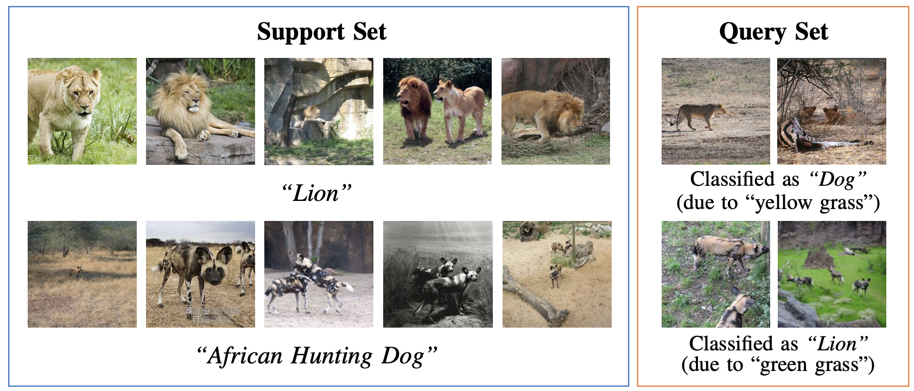 |
Interventional Few-Shot Learning Zhongqi Yue, Hanwang Zhang, Qianru Sun, Xian-Sheng Hua Neural Information Processing Systems, NeurIPS '20. [paper] [code] We uncover an ever-overlooked deficiency in the prevailing Few-Shot Learning (FSL) methods: the pre-trained knowledge is indeed a confounder that limits the performance. This finding is rooted from our causal assumption: a Structural Causal Model (SCM) for the causalities among the pre-trained knowledge, sample features, and labels. Thanks to it, we propose a novel FSL paradigm: Interventional FewShot Learning (IFSL). Specifically, we develop three effective IFSL algorithmic implementations based on the backdoor adjustment, which is essentially a causal intervention towards the SCM of many-shot learning: the upper-bound of FSL in a causal view. It is worth noting that the contribution of IFSL is orthogonal to existing fine-tuning and meta-learning based FSL methods, hence IFSL can improve all of them, achieving a new 1-/5-shot state-of-the-art. |

|
Feature Pyramid Transformer Dong Zhang, Hanwang Zhang, Jinhui Tang, Meng Wang, Xian-Sheng Hua, Qianru Sun European Conference on Computer Vision, ECCV '20. [paper] [code] Feature interactions across space and scales underpin modern visual recognition systems because they introduce beneficial visual contexts. Conventionally, spatial contexts are passively hidden in the CNN's increasing receptive fields or actively encoded by non-local convolution. Yet, the non-local spatial interactions are not across scales, and thus they fail to capture the non-local contexts of objects (or parts) residing in different scales. To this end, we propose a fully active feature interaction across both space and scales, called Feature Pyramid Transformer. It transforms any feature pyramid into another feature pyramid of the same size but with richer contexts, by using three specially designed transformers in self-level, top-down, and bottom-up interaction fashion. FPT serves as a generic visual backbone with fair computational overhead. |
| 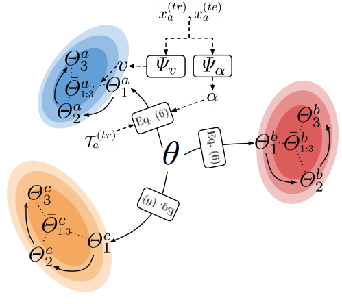 |
An Ensemble of Epoch-wise Empirical Bayes for Few-shot Learning Yaoyao Liu, Bernt Schiele, Qianru Sun European Conference on Computer Vision, ECCV '20. [paper] [code] Few-shot learning aims to train efficient predictive models with a few examples. The lack of training data leads to poor models that perform high-variance or low-confidence predictions. In this paper, we propose to meta-learn the ensemble of epoch-wise empirical Bayes models (E3BM) to achieve robust predictions. "Epoch-wise" means that each training epoch has a Bayes model whose parameters are specifically learned and deployed. "Empirical" means that the hyperparameters, e.g., used for learning and ensembling the epoch-wise models, are generated by hyperprior learners conditional on task-specific data. We introduce four kinds of hyperprior learners by considering inductive vs. transductive, and epoch-dependent vs. epoch-independent, in the paradigm of meta-learning. Our ablation study shows that both "epoch-wise ensemble" and "empirical" encourage high efficiency and robustness in the model performance. |
| 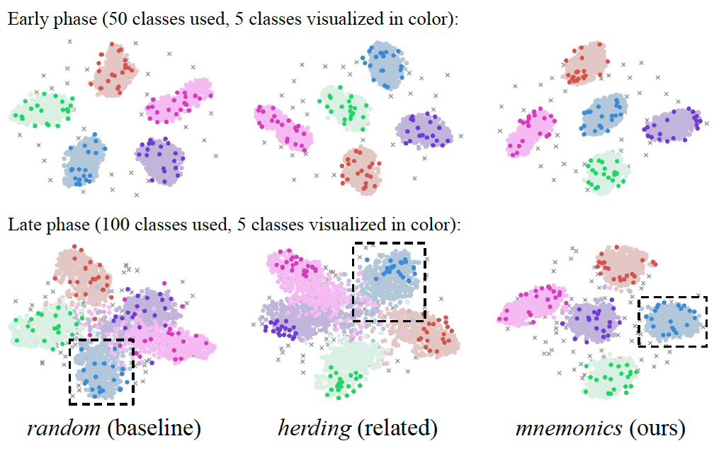 |
Mnemonics Training: Multi-Class Incremental Learning without Forgetting Yaoyao Liu, Yuting Su, An-An Liu, Bernt Schiele, Qianru Sun The 33rd Conference on Computer Vision and Pattern Recognition, CVPR '20. (Oral Presentation, 4%) [paper] [supp.] [video] [code] Multi-Class Incremental Learning aims to learn new concepts by incrementally updating a model trained on previous concepts. However, there is an inherent trade-off to effectively learning new concepts without catastrophic forgetting of previous ones. To alleviate this issue, it has been proposed to keep around a few examples of the previous concepts but the effectiveness of this approach heavily depends on the representativeness of these examples. This paper proposes a novel and automatic framework we call mnemonics, where we parameterize exemplars and make them optimizable in an end-to-end manner. We train the framework through bilevel optimizations, i.e., model-level and exemplar-level. We conduct extensive experiments on three MCIL benchmarks. Interestingly and quite intriguingly, the mnemonics exemplars tend to be on the boundaries between classes. |
| 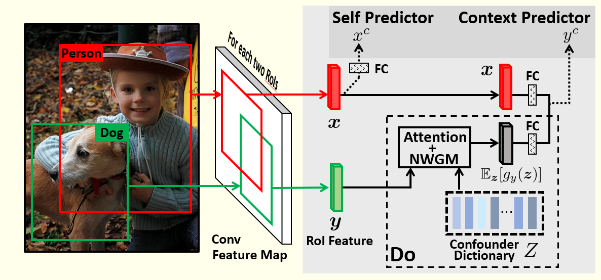 |
Visual Commonsense R-CNN Tan Wang, Jianqiang Huang, Hanwang Zhang, Qianru Sun The 33rd Conference on Computer Vision and Pattern Recognition, CVPR '20. [paper] [supp.] [video] [code] We present a novel unsupervised feature representation learning method, Visual Commonsense Region-based Convolutional Neural Network (VC R-CNN), to serve as an improved visual region encoder for high-level tasks such as captioning and VQA. Given a set of detected object regions in an image (e.g., by Faster R-CNN), like any other unsupervised feature learning methods (e.g., word2vec), the proxy training objective of VC R-CNN is to predict the contextual objects of a region. However, they are fundamentally different: the prediction of VC R-CNN is by causal intervention: P(Y|do(X)), while others are by the conventional likelihood: P(Y|X). This is also the core reason why VC R-CNN can learn ``sense-making'' knowledge --- like "chair" can be sat --- while not just common co-occurrences --- "chair" is likely to exist if "table" is observed. |
2019
| 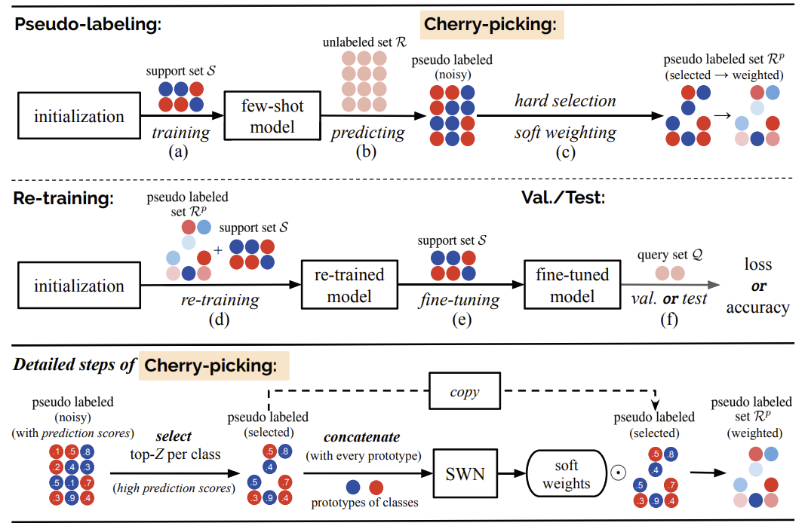 |
Learning to Self-Train for Semi-Supervised Few-Shot Classification Xinzhe Li, Qianru Sun, Yaoyao Liu, Shibao Zheng, Tat-Seng Chua, Bernt Schiele The 33rd Annual Conference on Neural Information Processing Systems, NeurIPS'19. [paper] [slides] [poster] [code] Few-shot classification (FSC) is challenging due to the scarcity of labeled training data (e.g. only one labeled data point per class). Meta-learning has shown to achieve promising results by learning to initialize a classification model for FSC. In this paper we propose a novel semi-supervised meta-learning method called learning to self-train (LST) that leverages unlabeled data and specifically meta-learns how to cherry-pick and label such unsupervised data to further improve performance. To this end, we train the LST model through a large number of semi-supervised few-shot tasks. On each task, we train a few-shot model to predict pseudo labels for unlabeled data, and then iterate the self-training steps on labeled and pseudo-labeled data with each step followed by fine-tuning. We additionally learn a soft weighting network (SWN) to optimize the self-training weights of pseudo labels so that better ones can contribute more to gradient descent optimization. |
| 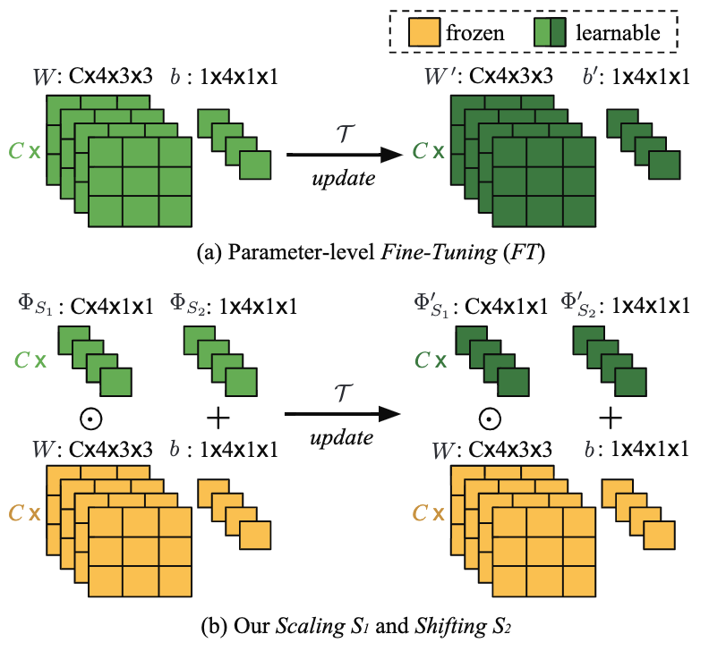 |
Meta-Transfer Learning for Few-Shot Learning Qianru Sun, Yaoyao Liu, Tat-Seng Chua, Bernt Schiele The 32nd Conference on Computer Vision and Pattern Recognition, CVPR'19. [paper] [poster] [code] Meta-learning has been proposed as a framework to address the challenging few-shot learning setting. The key idea is to leverage a large number of similar few-shot tasks in order to learn how to adapt a base-learner to a new task for which only a few labeled samples are available. As deep neural networks (DNNs) tend to overfit using a few samples only, meta-learning typically uses shallow neural networks (SNNs), thus limiting its effectiveness. In this paper we propose a novel few-shot learning method called meta-transfer learning (MTL) which learns to adapt a deep NN for few shot learning tasks. Specifically, meta refers to training multiple tasks, and transfer is achieved by learning scaling and shifting functions of DNN weights for each task. In addition, we introduce the hard task (HT) meta-batch scheme as an effective learning curriculum for MTL. |
2018
| 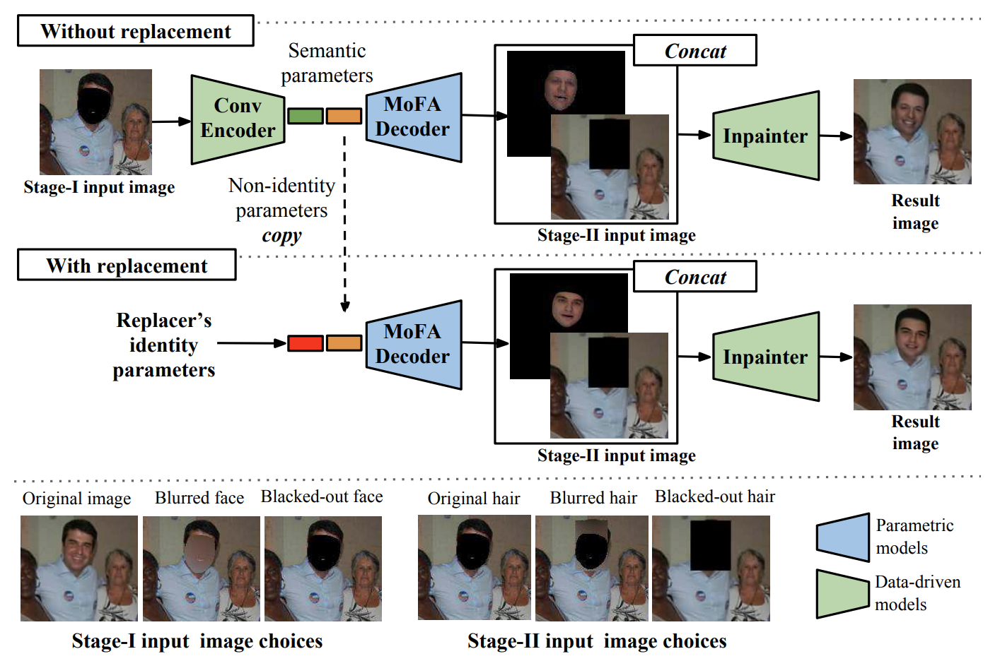 |
A Hybrid Model for Identity Obfuscation by Face Replacement Qianru Sun, Ayush Tewari, Weipeng Xu, Mario Fritz, Christian Theobalt, Bernt Schiele The 15th European Conference on Computer Vision, ECCV'18. [paper] [decoder code] As more and more personal photos are shared and tagged in social media, avoiding privacy risks such as unintended recognition, becomes increasingly challenging. We propose a new hybrid approach to obfuscate identities in photos by head replacement. Our approach combines state of the art parametric face synthesis with latest advances in Generative Adversarial Networks (GAN) for data-driven image synthesis. On the one hand, the parametric part of our method gives us control over the facial parameters and allows for explicit manipulation of the identity. On the other hand, the data-driven aspects allow for adding fine details and overall realism as well as seamless blending into the scene context. In our experiments we show highly realistic output of our system that improves over the previous state of the art in obfuscation rate while preserving a higher similarity to the original image content. |
| 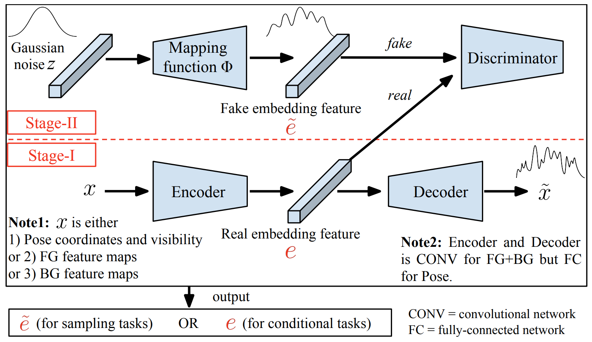 |
Disentangled Person Image Generation Liqian Ma, Qianru Sun, Stamatios Georgoulis, Luc Van Gool, Bernt Schiele, Mario Fritz 2018 IEEE Conference on Computer Vision and Pattern Recognition, CVPR'18. (Spotlight Presentation) [paper] [code] [project] Generating novel, yet realistic, images of persons is a challenging task due to the complex interplay between the different image factors, such as the foreground, background and pose information. In this work, we aim at generating such images based on a novel, two-stage reconstruction pipeline that learns a disentangled representation of the aforementioned image factors and generates novel person images at the same time. First, a multi-branched reconstruction network is proposed to disentangle and encode the three factors into embedding features, which are then combined to re-compose the input image itself. Second, three corresponding mapping functions are learned in an adversarial manner in order to map Gaussian noise to the learned embedding feature space, for each factor, respectively. Using the proposed framework, we can manipulate the foreground, background and pose of the input image, and also sample new embedding features to generate such targeted manipulations, that provide more control over the generation process. Experiments on the Market-1501 and Deepfashion datasets show that our model does not only generate realistic person images with new foregrounds, backgrounds and poses, but also manipulates the generated factors and interpolates the in-between states. Another set of experiments on Market-1501 shows that our model can also be beneficial for the person re-identification task. |
| 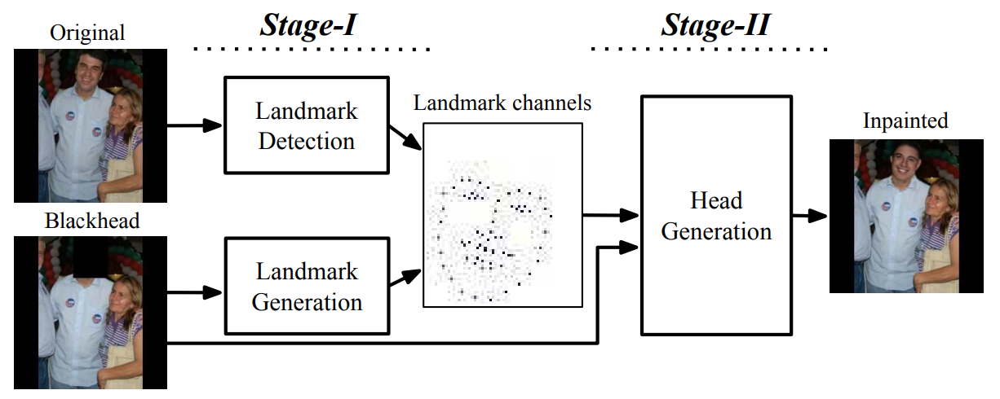 |
Natural and Effective Obfuscation by Head Inpainting Qianru Sun, Liqian Ma, Seong Joon Oh, Luc Van Gool, Bernt Schiele, Mario Fritz 2018 IEEE Conference on Computer Vision and Pattern Recognition, CVPR'18. [paper] [decoder code] [PDM code] As more and more personal photos are shared online, being able to obfuscate identities in such photos is becoming a necessity for privacy protection. People have largely resorted to blacking out or blurring head regions, but they result in poor user experience while being surprisingly ineffective against state of the art person recognizers. In this work, we propose a novel head inpainting obfuscation technique. Generating a realistic head inpainting in social media photos is challenging because subjects appear in diverse activities and head orientations. We thus split the task into two sub-tasks: (1) facial landmark generation from image context (e.g. body pose) for seamless hypothesis of sensible head pose, and (2) facial landmark conditioned head inpainting. We verify that our inpainting method generates realistic person images, while achieving superior obfuscation performance against automatic person recognizers. |
2017
| 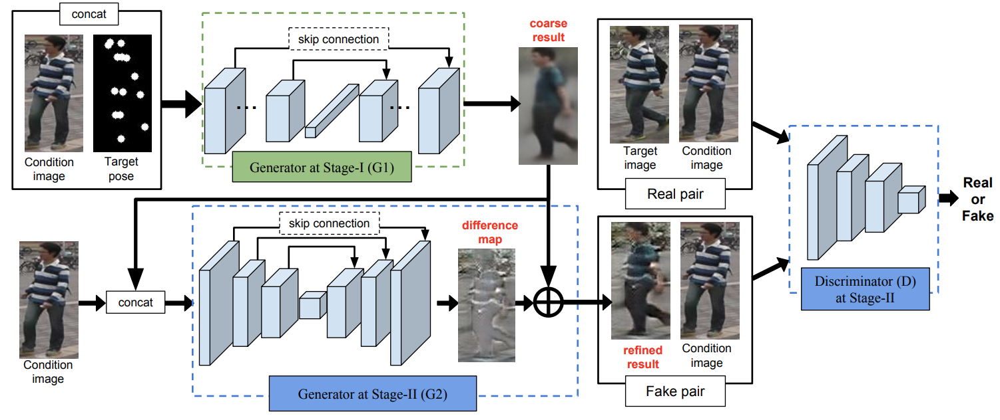 |
Pose Guided Person Image Generation Liqian Ma, Xu Jia, Qianru Sun, Bernt Schiele, Tinne Tuytelaars, Luc Van Gool The 31st Annual Conference on Neural Information Processing, NIPS'17. [paper] [slides] [code] This paper proposes the novel Pose Guided Person Generation Network (PG2) that allows to synthesize person images in arbitrary poses, based on an image of that person and a novel pose. Our generation framework PG2 utilizes the pose information explicitly and consists of two key stages: pose integration and image refinement. In the first stage the condition image and the target pose are fed into a U-Net-like network to generate an initial but coarse image of the person with the target pose. The second stage then refines the initial and blurry result by training a U-Net-like generator in an adversarial way. Extensive experimental results on both 128×64 re-identification images and 256×256 fashion photos show that our model generates high-quality person images with convincing details. |
| 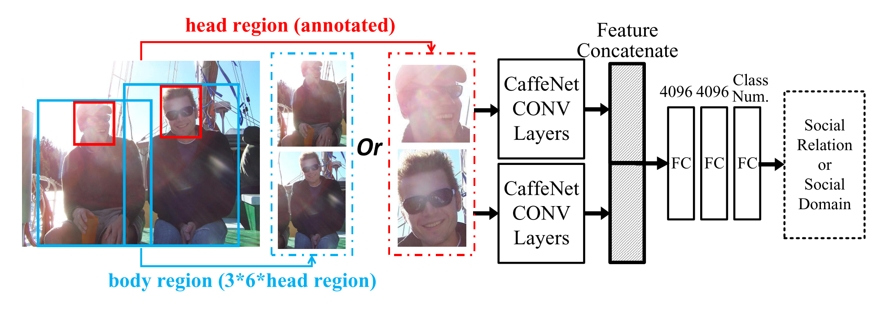 |
A Domain Based Approach to Social Relation Recognition Qianru Sun, Bernt Schiele, Mario Fritz 2017 IEEE Conference on Computer Vision and Pattern Recognition, CVPR'17. [paper] [code] [project] Social relations are the foundation of human daily life. Developing techniques to analyze such relations from visual data bears great potential to build machines that better understand us and are capable of interacting with us at a social level. Previous investigations have remained partial due to the overwhelming diversity and complexity of the topic and consequently have only focused on a handful of social relations. In this paper, we argue that the domain-based theory from social psychology is a great starting point to systematically approach this problem. The theory provides coverage of all aspects of social relations and equally is concrete and predictive about the visual attributes and behaviors defining the relations included in each domain. We provide the first dataset built on this holistic conceptualization of social life that is composed of a hierarchical label space of social domains and social relations. We also contribute the first models to recognize such domains and relations and find superior performance for attribute based features. Beyond the encouraging performance of the attribute based approach, we also find interpretable features that are in accordance with the predictions from social psychology literature. Beyond our findings, we believe that our contributions more tightly interleave visual recognition and social psychology theory that has the potential to complement the theoretical work in the area with empirical and data-driven models of social life. |